はじめに
Oracle Cloud Infrastructure Exadata Database Service on Dedicated Infrastructure (ExaDB-D) では、Oracle Cloud Infrastructureの上で稼働するOracle DatabaseのPDBをOCIコンソールから停止したり、起動したり、既存PDBからクローンするなどの操作が簡単に行うことが可能です。この章では実際にどのように操作するのか確認していきます。
目次 :
前提条件 :
- 101 : ExaDB-Dを使おうを通じてExaDB-Dの作成が完了していること
所要時間 : 約1時間
1. PDBの起動・停止
-
OCIコンソール・メニューから Oracle Database → Oracle Public Cloud上のExadata に移動します。

-
利用したいコンパートメントをリスト範囲のコンパートメントから選択します。

-
利用したいリージョンを右上のリージョンの折りたたみメニューをクリックして、リージョンの一覧から選択します。

-
操作したいPDBを持つExadata VMクラスタの表示名をクリックします。

-
データベースの一覧から対象のデータベースの名前をクリックします。
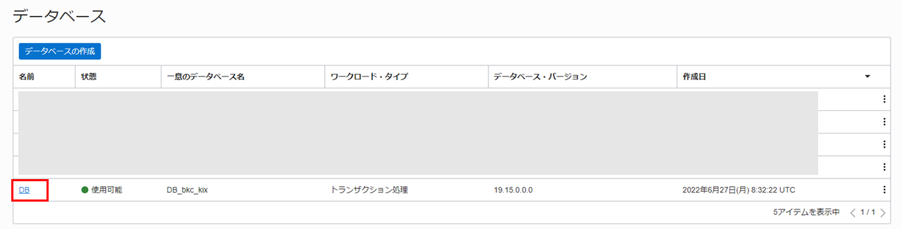
-
リソースの一覧からプラガブル・データベースをクリックします。
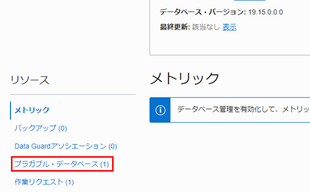
-
操作したいPDBの右側にある・・・メニューをクリックして、停止をクリックします。
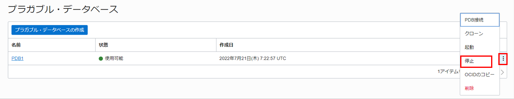
-
確認画面が表示されたら、PDBの停止をクリックします。
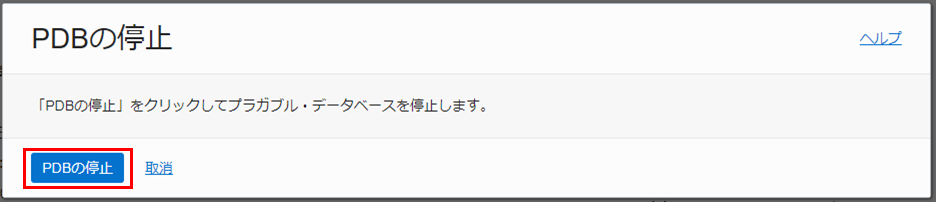
操作したPDBの状態が更新中に変化します。
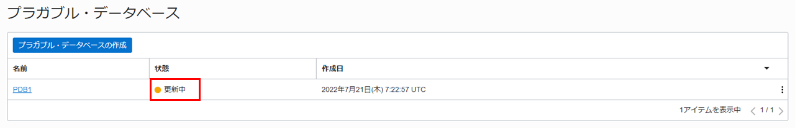
-
停止が完了すると状態が使用可能に戻ります。
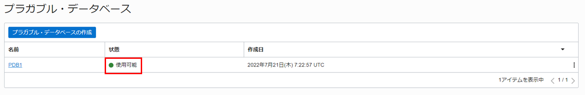
-
対象のPDBのプラガブル・データベースの詳細でオープン・モードを確認できます。
対象のPDBの状態がマウント済になっていることを確認します。
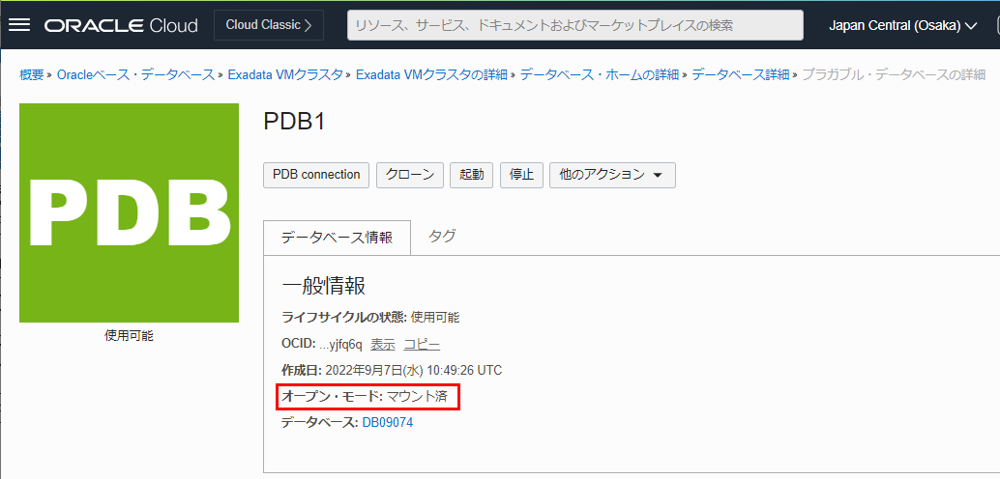
同様の手順でPDBを起動することができます。起動すると読み取り/書込みモードで起動されます。
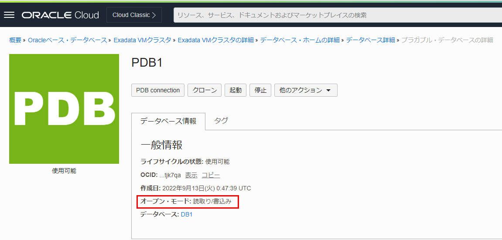
2. PDBの新規作成
-
OCIコンソール・メニューから Oracle Database → Oracle Public Cloud上のExadata に移動します。
-
操作したいPDBを持つExadata VMクラスタの表示名をクリックします。
-
データベースの一覧から対象のデータベースの名前をクリックします。
-
リソースの一覧からプラガブル・データベースをクリックします。
-
プラガブル・データベースの作成をクリックします。
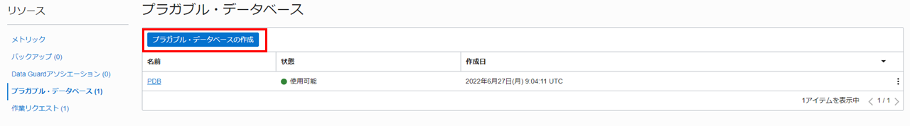
- プラガブル・データベースの作成ダイアログに以下の情報を入力します。
- PDB名の入力 - 任意の名前を入力します。
- データベースのTDEウォレット・パスワード - データベースを作成した際に設定したsysスキーマのパスワード。101 : ExaDB-Dを使おうの3. データベースの作成で設定したパスワードです。
設定後、プラガブル・データベースの作成をクリックします。
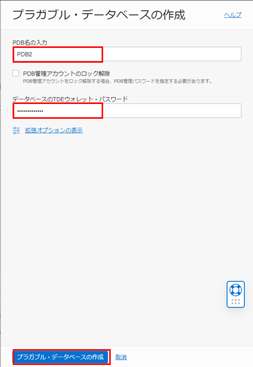
-
作成が完了すると作成したPDBの状態が使用可能と表示されます。
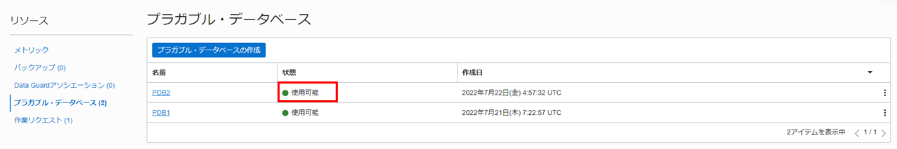
-
対象のPDBのプラガブル・データベースの詳細でオープン・モードを確認できます。
対象のPDBの状態が読み取り/書込みになっていることを確認します。
3. PDBクローンの作成
-
101 : ExaDB-Dを使おうの6. PDB上のスキーマへのアクセスでPDB上に作成したスキーマに接続します。スキーマを作成していない場合は101 : ExaDB-Dを使おうの5. データベース(PDB)へのアクセスを参照ください。
-
スキーマ上にサンプル・データを追加します。
実行コマンド
CREATE TABLE EMPLOYEE ( EmployeeID int, LastName varchar(255), FirstName varchar(255), Address varchar(255), City varchar(255) ); INSERT INTO EMPLOYEE (EmployeeID, LastName, FirstName, Address, City) Values ('1', 'James', 'Steve', '123way', 'Los Angeles'); exit;上記の手順でサンプル・データを追加したPDBをクローン元とします。
-
OCIコンソール・メニューから Oracle Database → Oracle Public Cloud上のExadata に移動します。
-
操作したいPDBを持つExadata VMクラスタの表示名をクリックします。
-
データベースの一覧から対象のデータベースの名前をクリックします。
-
リソースの一覧からプラガブル・データベースをクリックします。
-
クローン元となるPDBの右側にある・・・メニューをクリックして、クローンをクリックします。
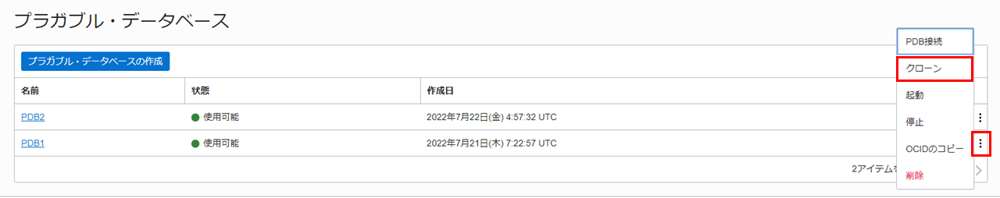
- PDBのクローニングダイアログに以下の情報を入力します。
- [コンパートメント名]のExadata VMクラスタ - クローン先のVMクラスタを選択します。
- 宛先データベース - PDBクローンの作成先を指定します。
- ソース・データベースの管理パスワード - 本ガイドのようにローカルのCDBに作成する場合は入力不要です。リモートのCDBに作成する場合入力が必須となります。データベースを作成した際に設定したsysスキーマのパスワードです。101 : ExaDB-Dを使おうの3. データベースの作成で設定したパスワードです。
- 新規PDBの構成
- PDB名 - 任意の名前を入力します。
- データベースのTDEウォレット・パスワード - データベースを作成した際に設定したsysスキーマのパスワードです。101 : ExaDB-Dを使おうの3. データベースの作成で設定したパスワードです。
設定後、PDBのクローニングをクリックします。
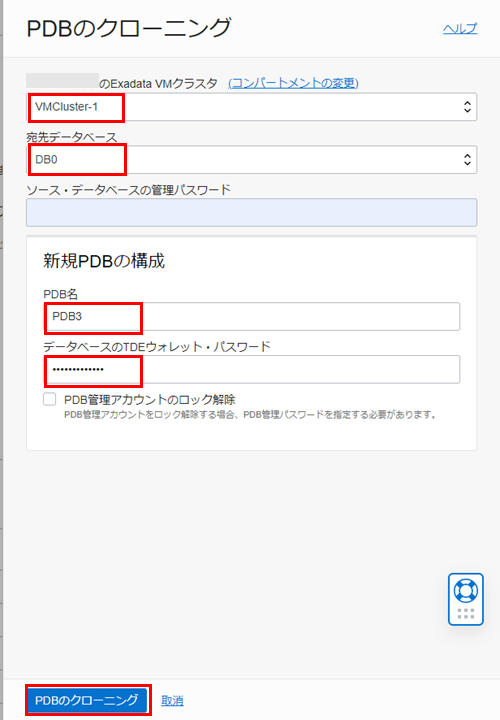
-
作成が完了すると作成したPDBの状態が使用可能と表示されます。
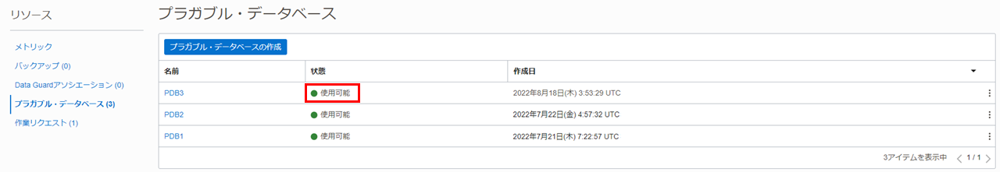
-
対象のPDBのプラガブル・データベースの詳細でオープン・モードを確認できます。
対象のPDBの状態が読み取り/書込みになっていることを確認します。
-
クローン元(PDB1)で作成されていたスキーマ(TESTUSER)とサンプルデータ(EMPLOYEE表)がクローン(PDB3)に存在することをデータベースにSQL*Plusから接続して確認します。接続方法は101 : ExaDB-Dを使おうの5. データベース(PDB)へのアクセスを参照ください。
データベースに接続して以下のように確認します。
実行コマンド
show con_name show pdbs alter session set container = pdb3; select * from testuser.employee;実行例
SQL> show con_name CON_NAME ------------------------------ CDB$ROOT SQL> show pdbs CON_ID CON_NAME OPEN MODE RESTRICTED ---------- ------------------------------ ---------- ---------- 2 PDB$SEED READ ONLY NO 3 PDB1 READ WRITE NO 4 PDB2 READ WRITE NO 5 PDB3 READ WRITE NO SQL> alter session set container = pdb3; Session altered. SQL> select * from testuser.employee; EMPLOYEEID LASTNAME FIRSTNAME ADDRESS CITY ---------- ---------- ---------- ---------- ----------- 1 James Steve 123way Los Angelesクローン元(PDB1)で作成されていたスキーマ(TESTUSER)とサンプルデータ(EMPLOYEE表)がクローン(PDB3)に存在することが確認できました。
以上で この章の作業は完了です。
参考資料
- Oracle Cloud Infrastructure Documentation - Oracle Exadata Database Service on Dedicated Infrastructure
- Oracle Cloud Infrastructure Exadata Database Service on Dedicated Infrastructure (ExaDB-D) サービス詳細